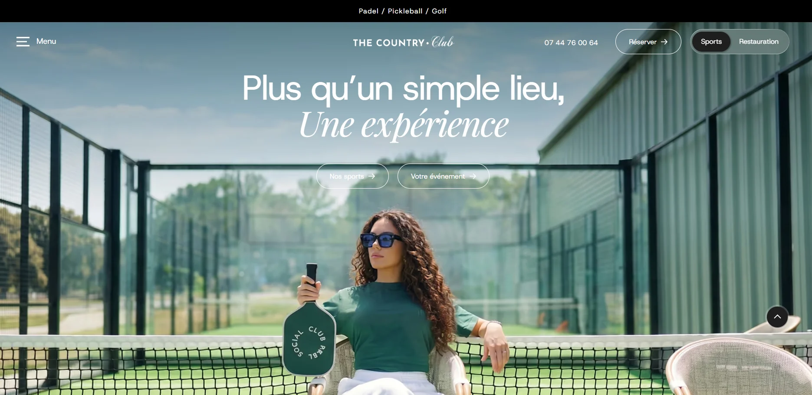
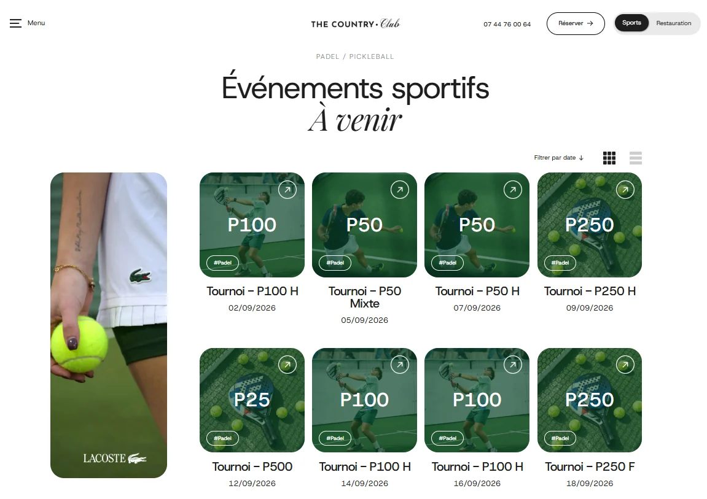
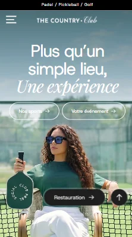

Journey-led structure
Strong entry points separate sports and hospitality intent, with direct routes into booking, events, and venue information.
06 / Webflow development
An immersive Webflow build connecting sport, hospitality, wellness, events, and live reservations in one coherent destination experience.
View live website ↗Live experience



Overview
The Country Club is a sports, hospitality, wellness, and events destination near Toulouse. My role was to translate the approved visual direction into a responsive Webflow system that helps players, diners, private groups, and business visitors reach the right experience quickly.
The development challenge
Bring distinct sports and hospitality journeys under one brand, make events and offers easy to maintain, and hand live court availability to the specialist booking platform without confusing the visitor.
Development approach
The finished build separates reusable content from presentation rules. The team can keep sports, events, dining, wellness, and business-club information current while the visual system stays consistent.
Strong entry points separate sports and hospitality intent, with direct routes into booking, events, and venue information.
Repeatable cards and collections support changing tournaments, experiences, and editorial content without rebuilding layouts.
Webflow remains the brand and acquisition layer, while Gestion Sports handles live reservation inventory through a clear external transition.
Public proof
Private traffic and conversion analytics were not supplied. These venue figures are published on the live website.
padel courts: five indoor and two outdoor.
pickleball courts available through the sports offer.
golf simulators expanding the all-weather experience.
Continue exploring